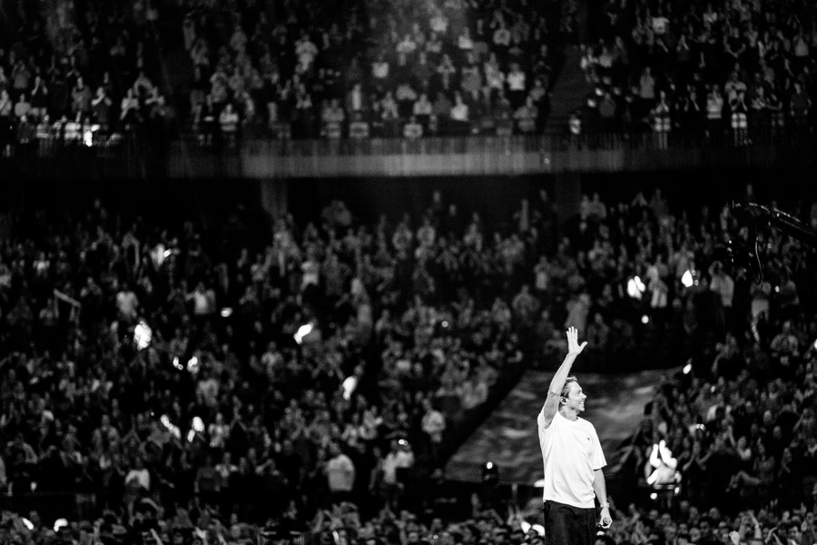
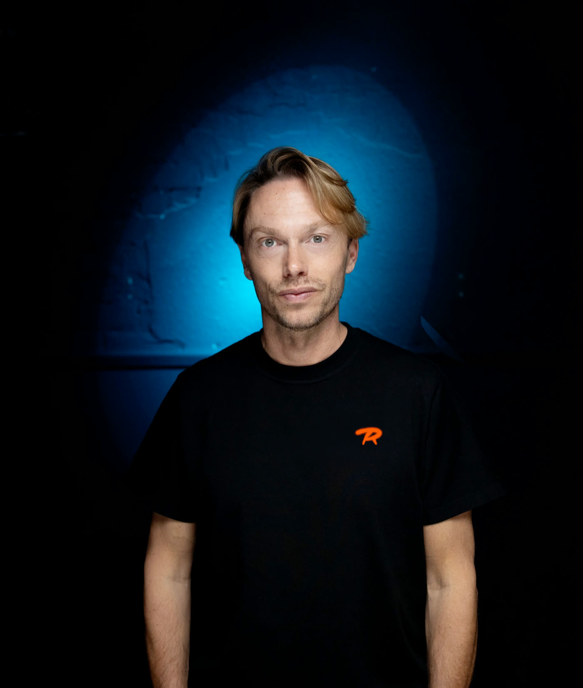

Nieuwsbrief
Weet het als eerste: nieuwe muziek, shows en presales.
Contact
- Algemeenlester@regipenxten.be
- Dj-boekingeninfo@tttartists.be
- Milk Inc. liveliesje@onebookings.be
- Pers & promomats.blankers@cnrrecords.be


Nieuwsbrief